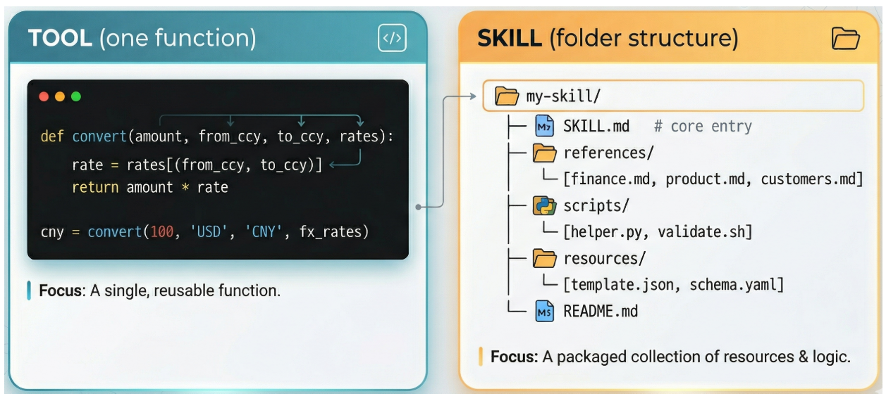
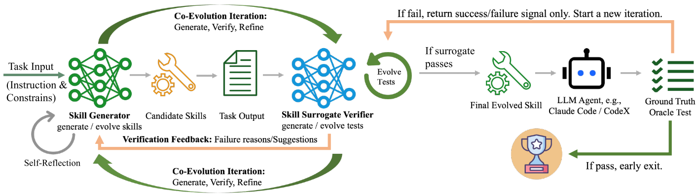

CoEvoSkills 论文阅读笔记
Introduction
Anthropic 提出了面向 LLM agent 的 skills 概念，用来处理简单工具调用无法解决的多步骤专业任务。工具通常是一个单一、独立的函数，而 skill 是一组结构化的、相互依赖的多文件工件，下图展示了两者区别。

当前 skill 生成不仅依赖人工编写、标注成本高，而且还可能存在人机认知错位 (human–machine cognitive misalignment)：人类设计出来的工作流未必符合 LLM agent 的推理和执行方式，导致 agent 性能下降，这一点在 SkillsBench 评测中已有体现。因此，本文希望让 agent 能够自主生成 skills。但是，现有用于工具自进化的方法不能直接应用到 skills 上，因为 skills 的结构更复杂 (这些方法存在根本的 tool–skill gap：它们主要面向一次性生成简单、自包含函数，不适合创建结构化的多文件 skill 包。多文件 skill 需要跨多个工件协调工作流说明、可执行脚本和领域参考资料)。
为了解决这些挑战，作者提出 CoEvoSkills。为了克服一次性生成多文件 skill 的不可靠性，作者设计了 Skill Generator，使其迭代生成和改进 skill bundle，并且随着进化轮次增加，skill 质量逐步提升。Skill Generator 还维护一个持久对话上下文，用来累计另一个核心组件 Surrogate Verifier 提供的高质量反馈。
Overview
为了解决上述问题，需要克服两个核心问题：
- 一次性生成多文件 skill bundle 本身就不可靠；
- agent 在自进化过程中缺少 ground-truth 反馈。
CoEvoSkills 通过让 agent 的 skill 和对应的 surrogate verifier 共同进化来解决这两个问题。给定一个任务输入，Skill Generator 生成候选 skills，并执行它们得到任务输出。一个信息隔离的 Surrogate Verifier 独立地针对这些输出生成并演化测试断言，然后把结构化失败诊断反馈给 generator。
两个组件通过 “generate–verify–refine” 循环共同进化：当 surrogate tests 全部通过时，ground-truth oracle 会在一个全新环境中重新执行该 skill，并且只返回一个不透明的成功/失败信号 (防止agent刷题式过拟合，且真实反馈很多都是不透明的，获取成本也低很多)。如果 oracle 通过，则最终 skill 会部署到目标 LLM agent，例如 Claude Code 或 Codex；如果 oracle 失败，这个信号会触发新一轮共同进化，此时 verifier 升级测试，generator 根据反馈继续改进 skill。
系统框架图如下图所示。

Problem Formulation
1.任务定义
由于 LLM agent 永远不知道隐藏 ground-truth tests 实际检查什么，也就是成功标准完全隐藏，LLM不能够直接判断自己离目标有多远，所以作者把任务环境定义为一个 POMDP (partially observable Markov decision process)：
其中：
- 为底层状态空间，也就是完整文件系统和进程状态；
- 为agent 的动作，例如终端命令和文件编辑；
- 为在状态 执行动作 后转移到 的确定性状态转移；
- 为观测空间，例如命令执行结果；
- 为从动作后的状态映射到部分观测；
- 为在最终状态 下，依据隐藏 ground-truth tests 评估输出文件。
由于 agent 只能收到部分观测：，所以它只能基于历史观测—动作序列行动：。
2.任务定义
不同于提供简单函数接口的原子工具，skill 是一个结构化 bundle，包含领域特定说明、可执行脚本和参考材料，共同指导 agent 在任务空间中行动。skill 会条件化 agent 的策略：
其中的 是LLM policy。
作者定义在 skill 下的期望终端奖励为：
其中：是执行轨迹；目标是找到最优 skill：。
CoEvoSkills Framework
1.为什么不能直接优化真实目标？
直接优化 是不可行的：ground-truth evaluation 计算成本高，而且只返回不透明的 pass/fail 信号；不会向 agent 暴露测试内容或失败细节。为了提供密集、可操作的反馈，作者引入 surrogate verifier reward 。它由独立 verifier 生成的一组 确定性测试断言(test assertion) 定义：
代理奖励定义为：
其中， 表示 skill 执行产生的输出文件， 表示第 个断言是否通过。
2.skill refinement 与 test escalation
但是 surrogate 只有在能够忠实近似隐藏真实奖励 时才有用。这就形成一个耦合优化问题：skill 要最大化 proxy reward，而 proxy 本身也要与隐藏 ground truth 对齐。由于 ground-truth oracle 只给二值信号 ，其中 是 oracle 在独立新环境中重新执行得到的输出，而且不会暴露测试内容，所以无法直接针对 优化。
文中定义 rollout operator：，表示第 个 skill 版本在环境 中执行得到的输出
而 表示同一个 skill 在新环境 中由 oracle 独立重执行得到的输出。
- CoEvoSkills 通过交替 refinement 进行：
固定当前 verifier 测试集 让 generator 修改 skill，使其通过 surrogate tests。
- 测试升级为：
如果 surrogate tests 全过了，但真实 oracle 仍失败，说明 verifier 太弱，于是升级 verifier。
3.Skill Generator
一次性 skill 生成经常会产生覆盖漏洞和逻辑错误，因为 agent 在生成过程中没有 ground-truth 反馈。为了支持迭代 refinement，Skill Generator 维护持久对话上下文 。初始时：
其中 是任务说明， 是领域无关的 meta-skill，也就是教模型如何创建 skills 的 skill-creator。
每次 skill 修订都从上一个版本演化而来。LLM 读取当前 skill 和累计验证反馈，生成改进版本：
其中 是 Surrogate Verifier 在测试 时给出的失败诊断，包括失败测试、根因分析和可操作修改建议； 表示把反馈追加进 LLM 上下文。
4.Surrogate Verifier
由于 ground-truth reward 只返回不透明的 pass/fail 信号，Skill Generator 缺少密集反馈来诊断并修正错误。Surrogate Verifier 通过作为 的代理来解决这一问题，提供 oracle 无法提供的逐断言失败诊断。
为了避免自验证中的确认偏差，Surrogate Verifier 运行在完全独立的 LLM 会话 。它只观察任务说明 和输出文件 ，看不到 Skill Generator 的推理、代码和 skill 内容。这样可以保证 verifier 的测试生成在条件上独立于 generator 的内部状态，避免继承 generator 的偏见。
Verifier 会生成确定性断言测试集，并根据计算代理奖励，Verifier 还会读取上一个测试脚本 和 当前输出 生成改进测试集：
当 surrogate reward 显示失败，即 ，verifier 还会生成结构化失败诊断：
诊断内容包括逐断言结果、根因分析和可操作修订建议，并反馈给 Skill Generator。
5.共同进化机制
根据下面两个公式：
可知交替优化耦合了两条反馈路径：
-
当 surrogate reward 表示失败时，测试集 保持不变，失败诊断 驱动 skill 修改。
-
当 surrogate tests 通过但 ground-truth oracle 失败时，只返回一个不透明 pass/fail bit，不提供测试内容或失败细节，以避免 Skill Generator 过拟合隐藏测试。此时 Surrogate Verifier 必须根据更新后的 skill 输出文件独立升级测试集，例如生成更多样、更全面、更有挑战性的测试用例。
-
通过这种双反馈机制，skill 在 surrogate test pressure 下不断改进。
实验
作者使用SkillsBench上评估了该方法，具体实验参考原文。
参考文献